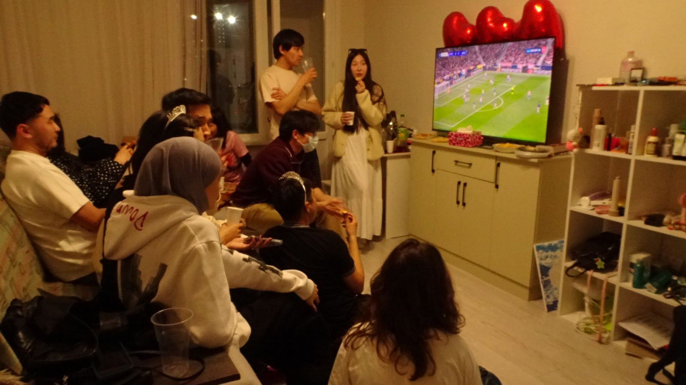

[Ask people why they come to Chatterbox, and most of them will give a practical answer: a job interview, a trip abroad, the fear of forgetting their English. Few would say, “I came to find friends.” But a speaking club is a special kind of place. To practise a language, you have to talk to people, ask them questions and really listen to the answers. Sooner or later, the practice stops being only about grammar.]
Chapter 5
What Brings Them Here
Ainar on what usually brings people to the club
